My portfolio
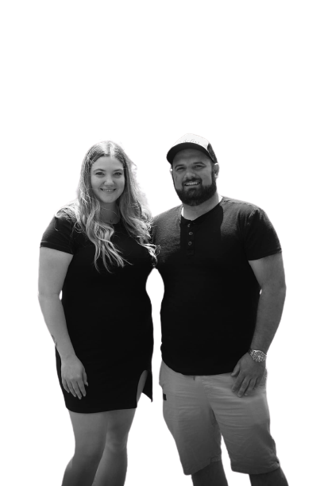
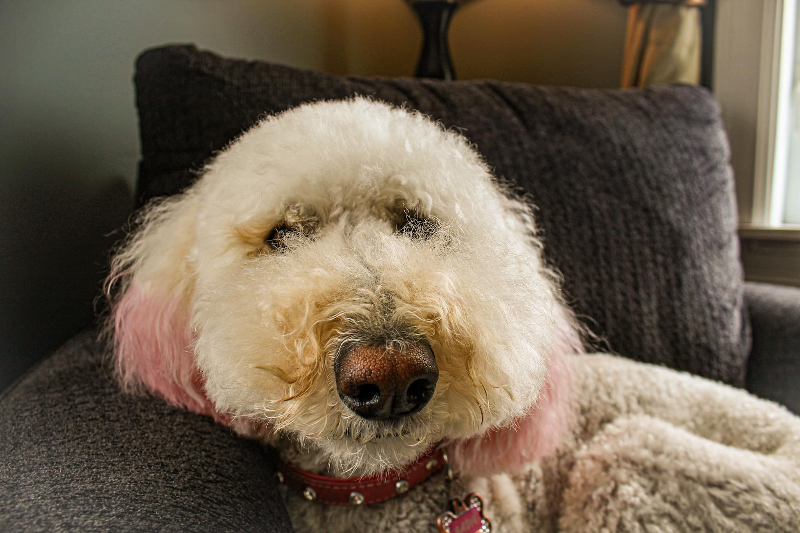
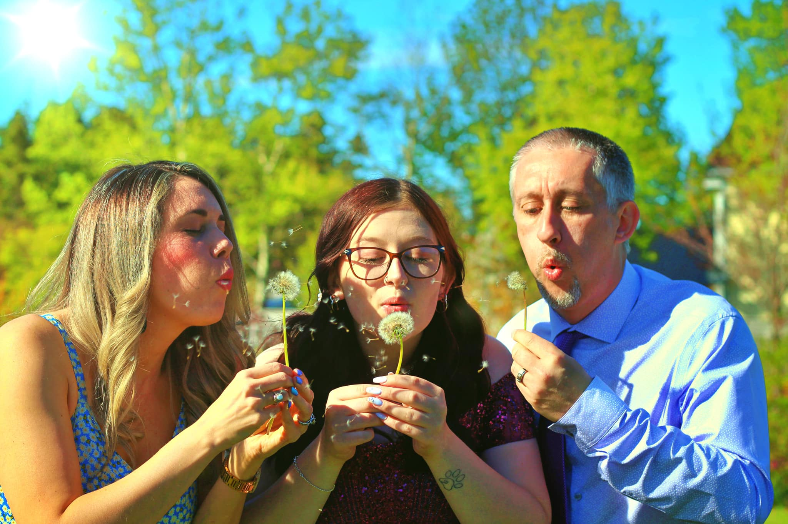
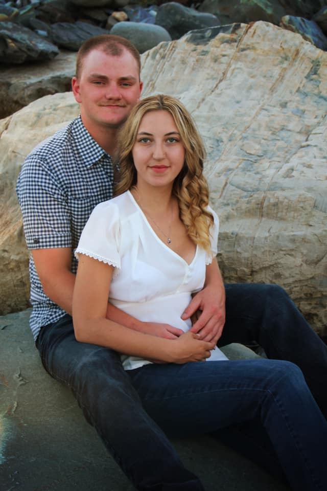
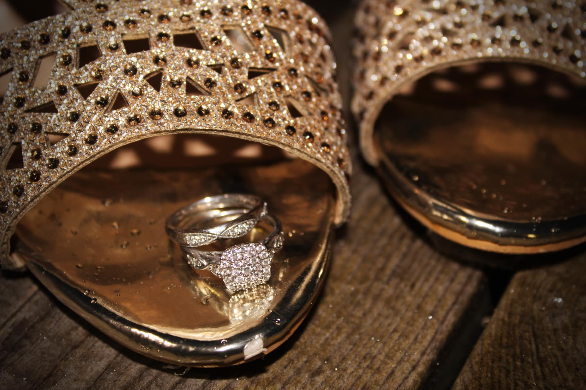
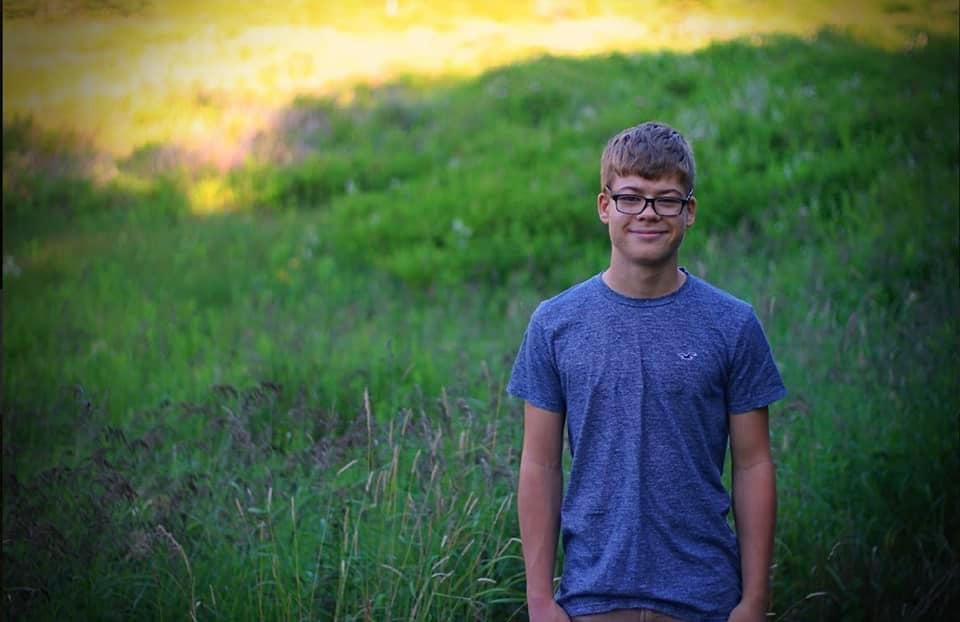
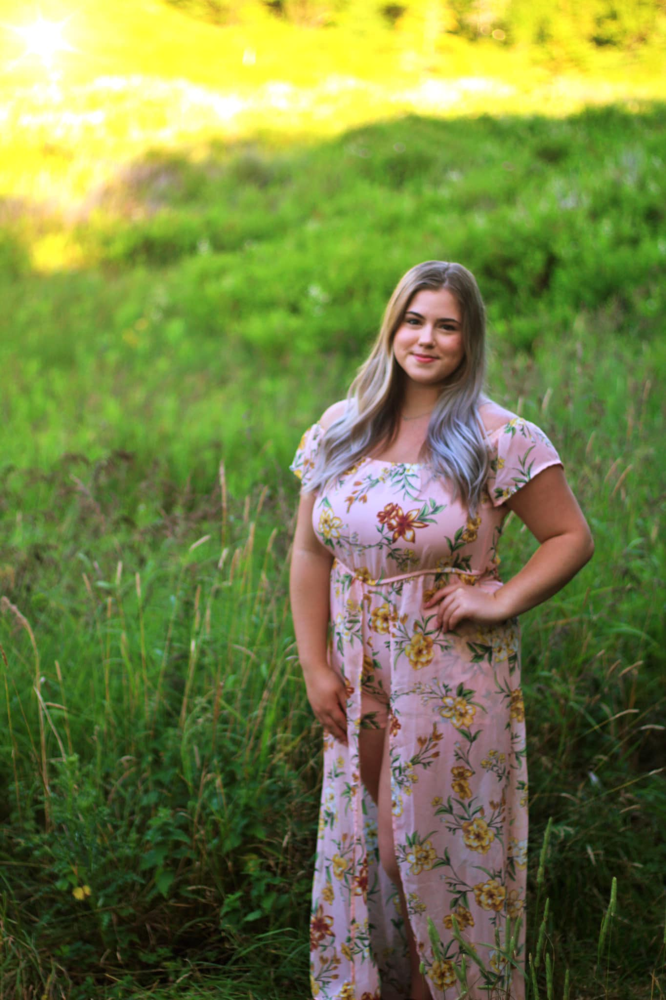
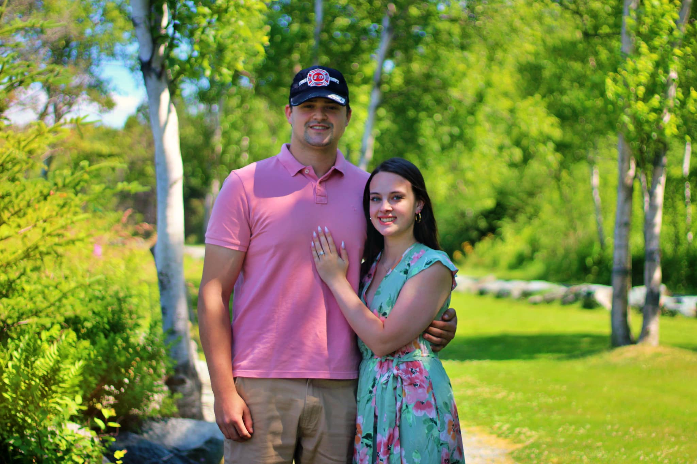
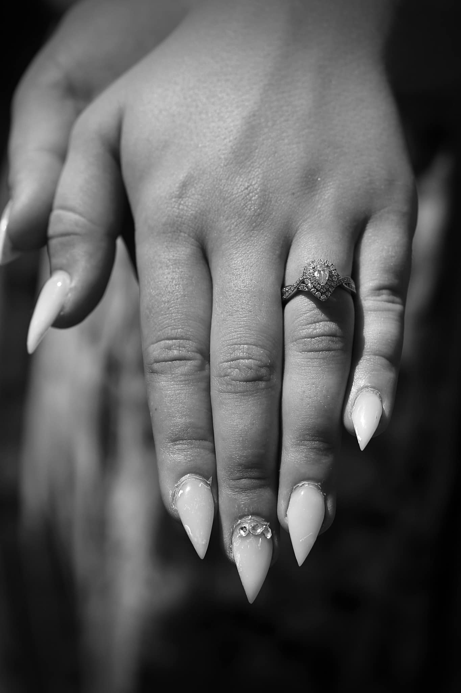
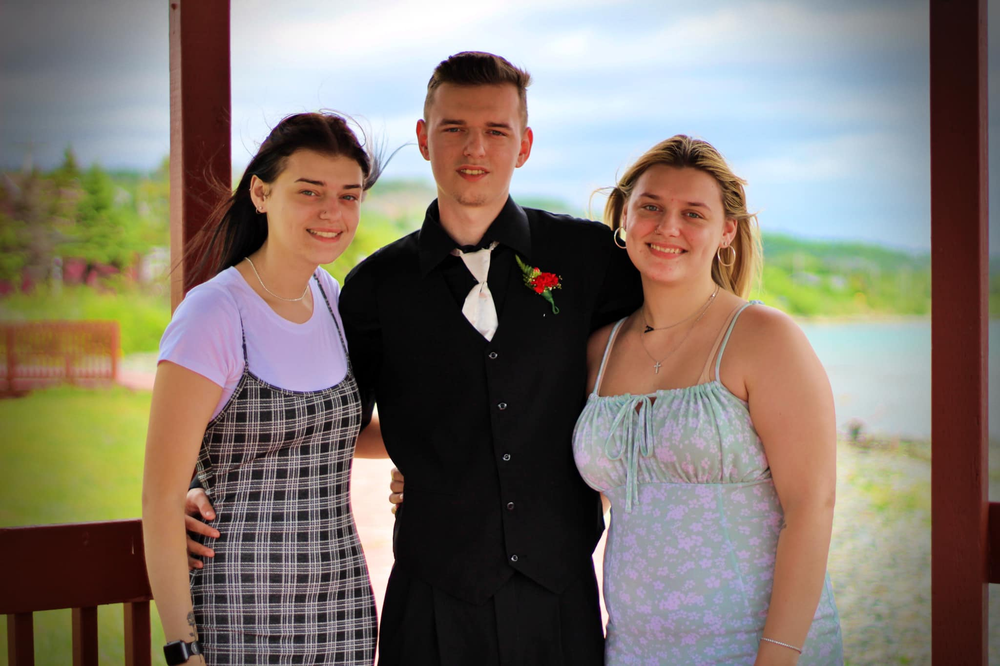
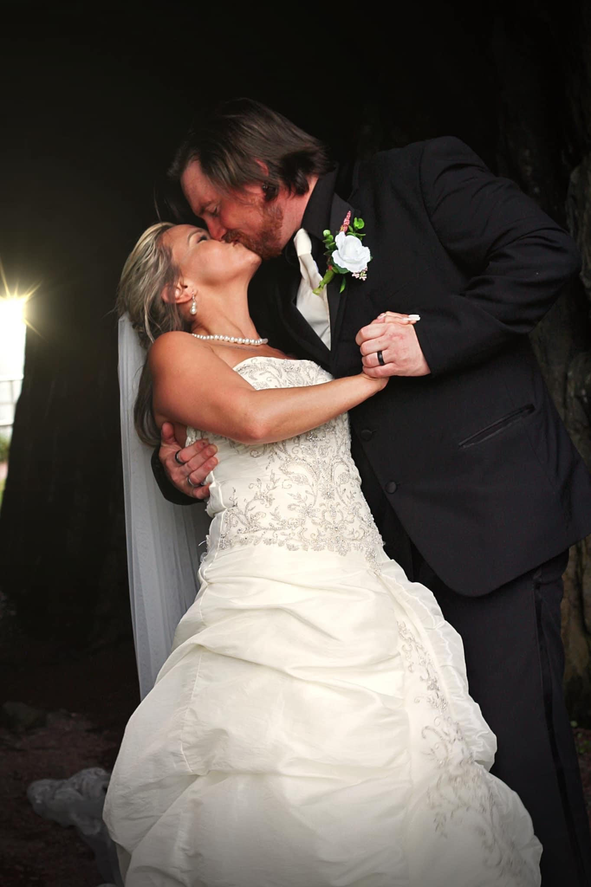
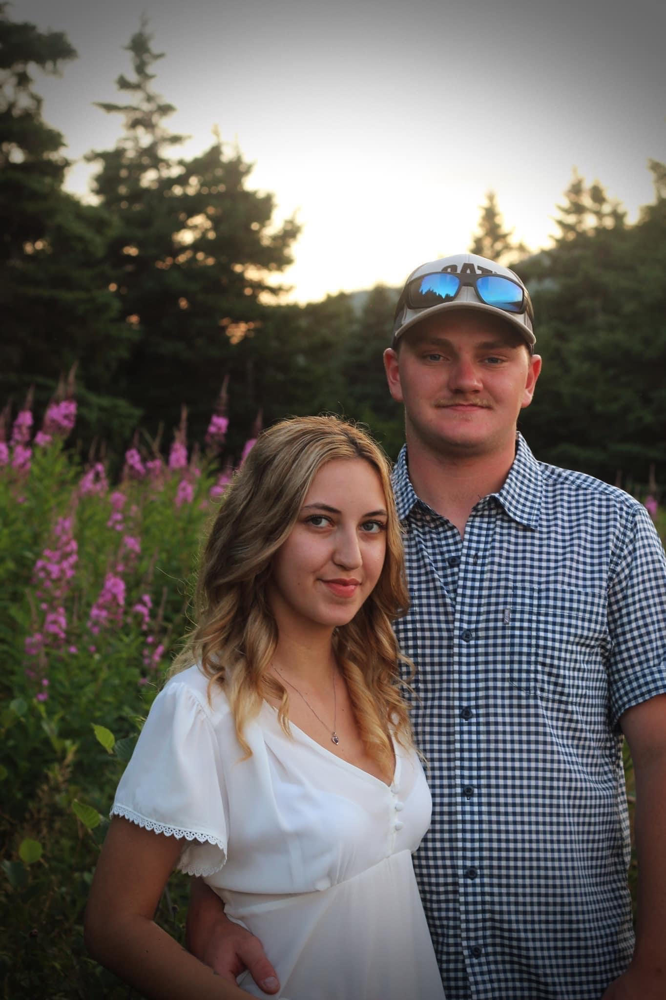
About Me

Hey! My name is Tamara Smith! I’m from the Town of Bay Roberts, Newfoundland however I currently live in St. John’s!
I am currently in school to become a Child Youth Care Worker and I also do photography on the side! I enjoy things like
playing with my dog, listening to music and hanging out with my family and friends!
When I was 12, for finishing my classes with good grades I had asked my parents for a camera!
And gratefully, they gave me just that! Since then, I’ve been working on photography over the past 7 years but have really
got into it the past year!
I enjoy capturing Newfoundland’s beauty and the beautiful people in it too!
Thank you for taking the time to read this! :)
Like what you see?
Send me a message on my Facebook page to set up an shoot!
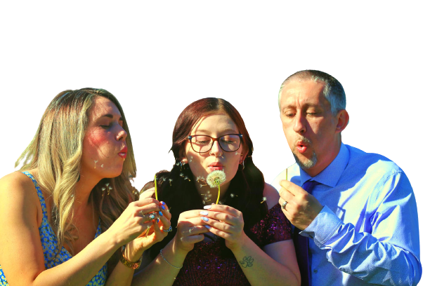